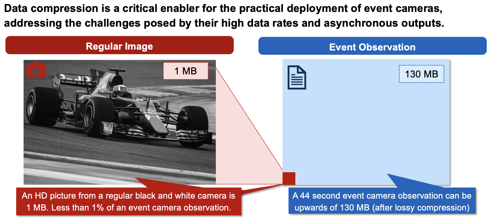
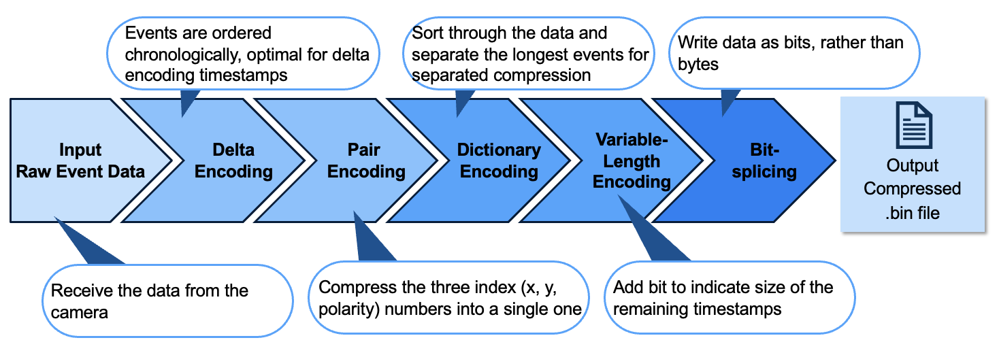
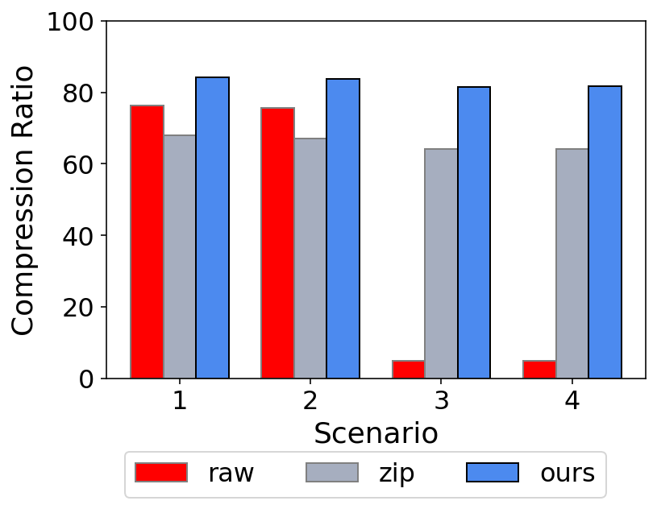

Event Camera Lossless Compression for Satellite Applications
Abstract
This thesis dives into the details of the event camera lossless compression algorithm for the EventSat mission. EventSat is a Low Earth Orbit CubeSat mission that will utilize an Event camera to observe stars and satellites. These cameras only record changes in pixel brightness. At the time of writing, there are no event data compression algorithms that are optimized for space applications. The algorithm's objective is to minimize file size and maintain data integrity for downlink purposes. The algorithm compresses data with multiple strategies, namely delta, dictionary, and variable-length encoding. Histogram analysis automatically calculates optimal algorithm thresholds. Additional compression strategies, such as bit splicing and pair encoding, are also implemented. The compression ratio is up to 84%, surpassing generic compression algorithms. The algorithm is open-sourced to support further research.
Motivation
There exist very few compression algorithms focused on the event data format. The file sizes produced by existing general-purpose compression techniques are fairly large. For a space-focused application, it would be ideal if the size were reduced further, as event cameras can generate millions of events in under a minute, which would take a significant amount of time to downlink. Furthermore, directly applying existing general-purpose compression algorithms is complicated because it may require fine-tuning the algorithm settings for the values recorded and observation length. If implemented as described above, development and execution would be time-consuming, and the mission would be reliant on third-party software. Additionally, these algorithms are not optimized for space applications, as they may prioritize execution speed rather than compression ratio or low-resource utilization.
Figure 1. Event cameras possess high data rates and an asynchronous output, which can result in signficantly higher file sizes than traditional frame cameras. The event observation on the right illustrates this point, as the frame size is scaled to the size of event data file size relative to a frame camera .
Contributions
This thesis makes the following contributions:
- A novel event data compression algorithm that uses a hybrid dictionary and variable-length encoding strategy. The dictionary encoding approach categorizes the data by size and compresses it in a separate section from the rest of the file. The variable-length encoding approach integrates compression instructions, indicating size right next to the data. Bit-splicing is used to reduce the amount of data padding present in standard-length integers. This strategy allows the algorithm to write information in files at the sub-byte level.
- A comprehensive trade-off histogram analysis to determine the optimal compression thresholds for dictionary and variable length encoding. The algorithm calculates file sizes for each threshold until the minimum size is found.
All data and code associated with this project are open source to facilitate further study.
What are event cameras?
Event-based vision is an alternative framework within visual sensing that pulls inspiration from the human visual system’s capability to detect and respond to motion changes in the environment. the vision system receives visual input asynchronously and transports this input to the visual cortex for processing. Cells in the retinal, composed of photoreceptors, bipolar cells, and ganglion cells, work together to detect changes in light intensity and motion. This biological system has inspired the development of event cameras, which operate on a similar principle.
Events are read off a chip in the format (t,x,y,p) which includes the pixel's xy address on the pixel array, the polarity (p) of the change (ON or OFF) and a microsecond timestamp (t). Together, the thousands of pixels in an event camera represent a dynamic view of the scene. The asynchronous update of each pixel occurs at an exceptionally high temporal resolution, enabling these cameras to adeptly capture fast-moving objects and dynamic scenes without the motion blur typically associated with frame cameras. Another key benefit of this class of camera is its ability to measure light intensity differences. Similar to the human eye, the event camera detects changes on a logarithmic scale, rather than with absolute values. This allows it to handle a wide range of lighting conditions effectively, avoiding common issues like overexposure or underexposure encountered with traditional frame camera systems. This adaptability is particularly valuable in environments with challenging lighting conditions like space.
Figure 3. Side-by-side comparison of frame camera capture of a satellite detumbling (left), and an event camera capture (right).
How does this method work?
Our algorithm, shown here, takes this input event data, and applies a delta encoding scheme for the timestamp, and a pair encoding scheme for the other event elements. To further compress the data, a combination of dictionary encoding and variable length encoding approaches are used. Then, finally, the data is written into bits rather than bytes, to produce a compressed bin file.
Figure 4. Algorithm Description.
How does our method stack up?
Across all scenarios tested, our method achieves a compression ratio of 85%.
Figure 5. Results against other benchmarks.
Our compression algorithm file [Bin] was smaller than the [Raw, Zip] files across all datasets. As such, the compression algorithm can be considered as a viable alternative to the commonplace compression algorithms. There are additional data procedures that will affect file size and downlink capabilities, such as packet headers and packet transmission management. Thus, the full downlink-observation ratio in a satellite mission cannot be calculated within the scope of this work alone.
Table 2 shows the data format at each step of the event compression. In the first step, the data is transformed from characters to integers. Secondly, Dictionary encoding separates timestamps with more bytes and an additional id value. Variable Encoding further splits the Non-Dictionary events. However, due to the small difference in timestamp size, the events remain the same length in bytes. The final three strategies allow for events to be smaller in bits, rather than bytes, resulting in a significant size reduction. Event distribution refers to the percentage of events that are either dictionary, long, or short events. Filesize is the expected size of an observation with 6,000,000 recorded values.The combination of all the strategies in files that are approximately 20% of the original file size. This result is due to the hybrid approach between the dictionary and variable-length encoding.
Presentation
BibTeX
@article{event_compression,
title={Event Camera Lossless Compression for Satellite Applications},
author={Antonio Junco de Haas},
year={2025},
url={https://sydneyid.github.io/event_compression/}
}